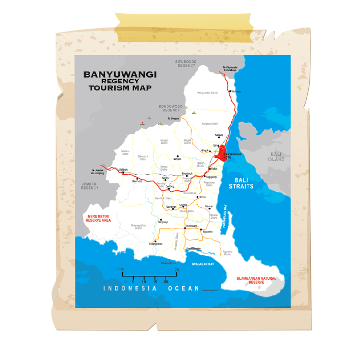

- 1. Banyuwangi Kota Pisang
- 2. Banyuwangi Lumbung Padi
- 3. Banyuwangi Kota Bahari
- 4. Banyuwangi Ijo Royo-royo
- 5. Bumi Blambangan
- 6. Banyuwangi Kota Gandrung
- 7. Banyuwangi Kota Santet
- 8. The Sunrise of Java
- 9. Kota Festival
- 10. Banyuwangi Kota Kopi
- 11. Mianure of Indonesia